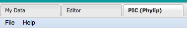
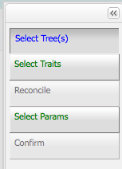
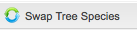

PIC (Phylip) tab
This tab enables users to conduct independent contrast analysis using the Contrast tool from the PHYLIP package (http://evolution.genetics.washington.edu/phylip/doc/contrast.html).
To begin, users must choose <Add Job> from the <File> menu.

This brings up a “Configure New Job” window with the following options:

• Select Tree(s)-Select to find and choose trees from available files containing tree data for use in analysis. Selection of multiple trees is permitted for analysis as long as corresponding traits exist.
Selection of multiple tree files is enabled by the following actions:
For Mac users: select initial file and hold <command> key while selecting subsequent files
For PC users: select initial file and hold <control> key while selecting subsequent files.
•
Select Traits(s)-Select to find and choose traits from available files containing trait data for use in analysis. All trait data that is to be used must be contained in one trait file. Selection of more than one trait file is not supported.
*Notes:
-
if a file contains both tree and trait data, it will be available in both listings for trees and traits
-
if a file contains multiple trees, all trees will be selected for analysis.
•
Select Params- Select to select which what details are desired in the output is desired. Available parameters are to display contrasts and display correlations and regressions. (
Future functionality will allow for the display of data sets selected for input). Selection of these parameters will enable the selected items for display on output. Deselection of these parameters will hide these details from the user on output. It is not possible to edit a job once it has been run to change these parameters.
The above items are enabled by default. There is no order required for selection of items within these panels.
Upon selection of tree and trait data, the following panels are enabled
 To utilize the reconcile functionality for tree data, select two species from panel with tree data and select "swap tree species"